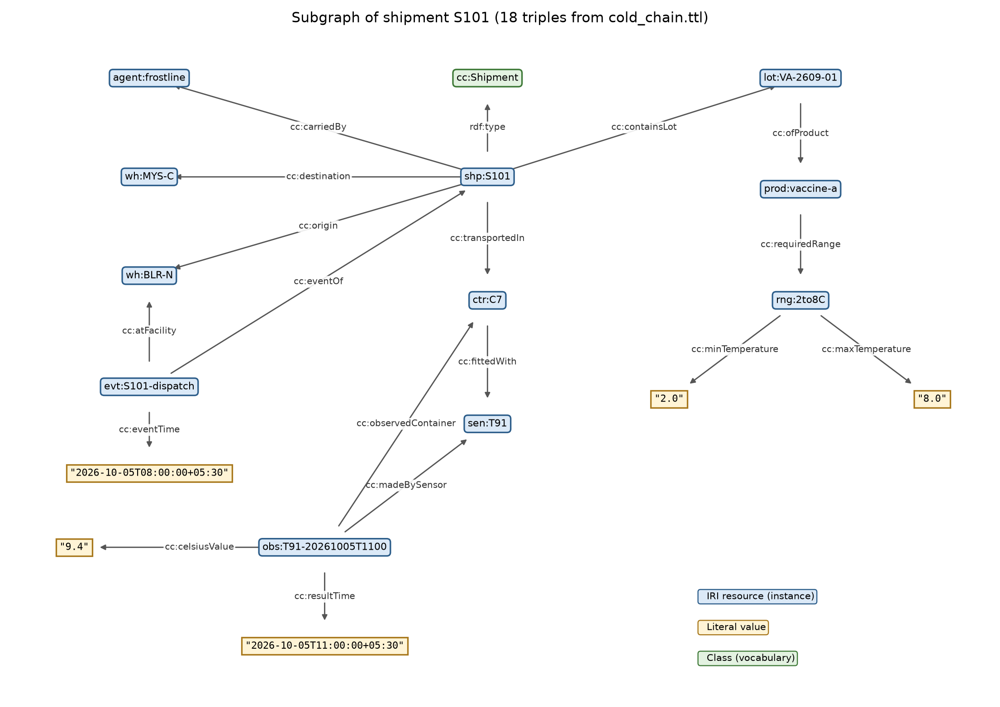

A vaccine distributor moves shipments between its warehouses in refrigerated containers. Each container carries a temperature sensor that logs readings during the trip. Today these records live in separate systems: a shipment sheet, the sensor logger's export, and product data sheets that state the permitted temperature range. Answering a simple question such as "Did shipment S101 stay within its required range while it was in transit?" means joining all three by hand.
Purpose. Describe shipments, containers, sensors, readings, products, warehouses, carriers and dispatch/arrival events as one machine-readable RDF graph with a small RDFS vocabulary, so the question above can be answered with a single query and the data can be exchanged with other systems.
Scope. In scope: the case entities (shipments S101–S102, containers C7–C8, sensors T91–T92, products Vaccine-A/B, warehouses Bengaluru-North and Mysuru-Central, dispatch and arrival events, timed readings, permitted ranges, carrier and responsible warehouse). I added realistic fictional details: one distributor (MediVault), one carrier (FrostLine), one physical lot per shipment with lot number, dose count and expiry date, sensor serial numbers and calibration dates. Out of scope: routing and GPS, people and drivers, regulatory documents, pricing, and any real organisation or medical guidance. All values are fictional.
| # | Competency question | Answered by |
|---|---|---|
| CQ1 | What does each shipment carry (product, lot, doses), in which container, with which carrier, and which warehouse is responsible? | Q2 |
| CQ2 | What temperature range must each shipment be kept within? | Q3 |
| CQ3 | Which readings taken during transit fell outside the permitted range? | Q4 |
| CQ4 | When and where was each shipment dispatched, and when and where did it arrive? | Q5 |
| CQ5 | Which sensor monitored each shipment's container, when was it last calibrated, and how many readings did it give? | Q6 |
| CQ6 | Which resources are logistics events, facilities or (SOSA) observations, even though none is typed that way directly? | Q7 (RDFS inference) |
The vocabulary and the data live in separate namespaces. Vocabulary terms use cc: <http://example.org/coldchain/vocab#>.
Every instance gets a path IRI http://example.org/coldchain/id/<type>/<code>, with one prefix per type, for
example shp:S101, ctr:C7, sen:T91, wh:BLR-N, lot:VA-2609-01,
evt:S101-dispatch and obs:T91-20261005T1100. IRIs are built only from stable business codes. Names and labels
can change without breaking links. The code is also kept as a literal (cc:code "S101") for display and for joining with
the source systems. Two external vocabularies are reused: SOSA (W3C Sensor, Observation, Sample and Actuator) and
QUDT units (unit:DEG_C). example.org is a placeholder domain. A real deployment would use an
IRI space the company controls.
The vocabulary declares 18 classes and 28 properties. Every property has an rdfs:label and a domain and/or range.
Literals use typed values: xsd:decimal for temperatures, xsd:dateTime with a +05:30 offset for event and
reading times, xsd:date for expiry and calibration dates, and xsd:integer for dose counts.
| Class hierarchy (rdfs:subClassOf) | Object properties (domain → range) | Datatype properties |
|---|---|---|
| Organisation ├ Distributor └ Carrier Facility └ Warehouse Product └ Vaccine ProductLot TemperatureRange Shipment Container └ RefrigeratedContainer sosa:Sensor └ Sensor └ TemperatureSensor LogisticsEvent ├ DispatchEvent └ ArrivalEvent sosa:Observation └ TemperatureObservation |
containsLot Shipment → ProductLot ofProduct ProductLot → Product requiredRange Product → TemperatureRange transportedIn Shipment → Container carriedBy Shipment → Carrier origin / destination Shipment → Facility responsibleWarehouse Shipment → Warehouse operatedBy Warehouse → Distributor fittedWith Container → Sensor eventOf LogisticsEvent → Shipment atFacility LogisticsEvent → Facility madeBySensor TempObs → Sensor ⊑ sosa:madeBySensor observedContainer TempObs → Container ⊑ sosa:hasFeatureOfInterest temperatureUnit TemperatureRange → (QUDT unit) |
name, code (xsd:string) city Facility lotNumber ProductLot doseCount ProductLot (xsd:integer) expiryDate ProductLot (xsd:date) minTemperature, maxTemperature TemperatureRange (xsd:decimal) serialNumber Sensor lastCalibrated Sensor (xsd:date) eventTime LogisticsEvent (xsd:dateTime) resultTime TempObs (xsd:dateTime) ⊑ sosa:resultTime celsiusValue TempObs (xsd:decimal) |
2 organisations, 2 warehouses, 2 vaccines, 2 temperature ranges (+2..+8 °C and −25..−15 °C), 2 lots, 2 containers, 2 sensors, 2 shipments, 4 events and 8 readings. S101 carries Vaccine-A from Bengaluru-North to Mysuru-Central in C7 (sensor T91). S102 carries frozen Vaccine-B from Mysuru-Central to Bengaluru-North in C8 (sensor T92). The data includes two deliberate test cases. T91 records 9.4 °C at 11:00, which is a real excursion during transit. It also records 1.6 °C at 07:30, which is below range but was taken during pre-cooling, before dispatch at 08:00. A correct query must report the first reading and ignore the second.

draw_graph.py checks that each drawn edge exists in cold_chain.ttl.
The path S101 → lot → product → range → max is the one that Q4 follows.prod:vaccine-a (a cc:Vaccine) describes what the product is. lot:VA-2609-01
(a cc:ProductLot) is the physical batch in the container, with its lot number, dose count and expiry date. The shipment
contains the lot, and the lot points to its product. Alternative rejected: shp:S101 cc:carries prod:vaccine-a.
That gives no place for lot-specific facts such as expiry and quantity. It would also attach recall or excursion consequences to the
whole product type instead of the affected batch.
rng:2to8C carries cc:minTemperature, cc:maxTemperature and a unit IRI
(unit:DEG_C). Ranges are reused: any product with the same storage class points to the same node. The range belongs to the
product, not the shipment, because it is a property of the medicine. Shipments inherit it through the lot (Q3).
Alternative rejected: two bare literals such as minTemp 2 and maxTemp 8 on each shipment. That copies
the rule into every record, loses the unit, and lets copies disagree.
Each cc:TemperatureObservation has madeBySensor, observedContainer, resultTime
and celsiusValue, matching the SOSA pattern. A reading is assigned to a shipment by its time: it counts if it falls
between that shipment's dispatch and arrival in the same container (Q4). This matches the real world. The sensor logs readings with no
knowledge of shipments, and containers are reused for many trips. The design also lets the model tell the pre-cooling reading (1.6 °C)
apart from an excursion during transit (9.4 °C). Alternative rejected: a direct reading → shipment link. It is
simpler to query, but it is a judgement stored as fact. It would be wrong for readings outside the trip window, and it would need
re-linking every time a container is reused.
evt:S101-dispatch is a cc:DispatchEvent with eventOf, atFacility and
eventTime. Each event can therefore record where it happened as well as when. New event types such as handover, customs
hold or a second leg can be added as further subclasses of cc:LogisticsEvent without changing the shipment.
Alternative rejected: shp:S101 cc:dispatchedAt "2026-10-05T08:00". This needs a new property for every kind of
event and cannot say where the event happened.
No excursion flag or "delivered" status is stored. Both follow from the readings, ranges and events, so storing them would
duplicate the data and risk contradicting it. They are computed by queries (Q4, Q5). For interoperability, the local terms are
declared as specialisations of SOSA (cc:TemperatureObservation ⊑ sosa:Observation,
cc:madeBySensor ⊑ sosa:madeBySensor, …). An RDFS reasoner then makes every reading visible to any SOSA-aware tool without
changing the data (Q7). Local names were kept because they fit the domain and avoid a full dependency on SOSA.
All results below were produced by python validate.py (rdflib 7 + owlrl), which writes results.txt.
The same file imports into GraphDB (ruleset RDFS-Optimized) and opens in Protégé.
| Check | Method | Result |
|---|---|---|
| Turtle syntax | rdflib parser | OK – 334 explicit triples (requirement: ≥ 50) |
| Vocabulary closure | every cc: predicate/class used in data is declared | 0 undeclared terms (18 classes, 28 properties) |
| Domain/range conformance | each subject/object already has the declared domain/range type via rdf:type + subClassOf | 0 violations, so RDFS domain/range rules add no unintended types |
| Data-quality rules | Q8: arrival after dispatch; every shipment has both events; complete readings; min < max | 0 rows |
| RDFS inference | owlrl RDFS closure | 752 triples (418 inferred, including RDFS axiomatic triples) |
| Query | Result (abridged from results.txt) |
|---|---|
| Q2 / CQ1 | S101 · Vaccine-A · lot VA-2609-01 · 2400 doses · C7 · FrostLine · Bengaluru-North S102 · Vaccine-B · lot VB-2609-07 · 1500 doses · C8 · FrostLine · Mysuru-Central |
| Q3 / CQ2 | S101: 2.0 to 8.0 DEG_C; S102: −25.0 to −15.0 DEG_C |
| Q4 / CQ3 | 1 row: S101 · T91 · 2026-10-05T11:00+05:30 · 9.4 (max 8.0). The 07:30 reading of 1.6 °C is correctly excluded as pre-dispatch. |
| Q5 / CQ4 | S101 Bengaluru-North 08:00 → Mysuru-Central 12:30; S102 Mysuru-Central 07:30 → Bengaluru-North 11:45 |
| Q6 / CQ5 | S101 · C7 · T91 · calibrated 2026-08-14 · 5 readings; S102 · C8 · T92 · 2026-09-02 · 3 readings |
| Q7 / CQ6 | 0 rows without inference, 14 with RDFS inference. The 4 events are LogisticsEvent via subClassOf. The 2 warehouses are Facility via subClassOf (and the range of origin/atFacility). The 8 readings are sosa:Observation via the SOSA alignment. |
Interpretation. Q4 is the result that matters most to the business. Answering it combines five sources of facts: the shipment,
its lot, the product's range, the dispatch and arrival events, and the container's readings. In the original records these sat in
three separate systems. Q7 shows what the RDFS layer adds. The data never states that a reading is a sosa:Observation,
but a reasoner concludes it from the vocabulary.
cc:eventOf, RDFS would quietly conclude that the reading is a
LogisticsEvent. This is why I added the explicit domain/range conformance check and the SPARQL rules in Q8. In
production, SHACL shapes would do this job (for example, "exactly one dispatch event per shipment" and "min < max").celsiusValue. Mixed-unit
loggers would need a value-plus-unit node (for example QUDT QuantityValue).Tools: Turtle edited in a plain text editor (Turtle 1.1 syntax); Python 3.12, rdflib 7 and owlrl for parsing, RDFS inference and SPARQL; matplotlib for Figure 1; optional GraphDB Free / Protégé for viewing. Sources: W3C RDF 1.1 Turtle and RDF Schema 1.1 recommendations; W3C SOSA/SSN ontology; QUDT units vocabulary; CSE4007 lecture material. AI assistance: Claude (Anthropic) was used to generate the Turtle file, the SPARQL queries, the validation and drawing scripts, and a draft of this report from the case description.